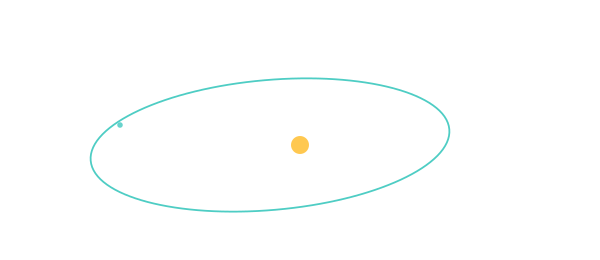

ORBITS

101 · zoom in
Orbits — gravity is the only physics that matters.
An orbit is what happens when you fall toward something but keep missing it. Throw a ball off a tower hard enough and the ground curves away faster than the ball drops — the ball never lands. Every spacecraft, every moon, every planet is doing exactly that trick around something heavier.
All orbits are ellipses, every single one. The Sun (or Earth, or whatever you're orbiting) sits at one focal point of the ellipse, never the centre. Six numbers — size, shape, three angles, and a clock position — describe any orbit perfectly. The eight sections in this tab unpack each of those numbers, and the master equation (vis-viva) that ties them all together.
Pick where you want to start. If physics is new to you, start with the Keplerian orbit — that's the whole concept in one section. If you want the workhorse equation, jump to vis-viva. If you want the historical drama, go to Kepler's three laws — a German astronomer in 1609 figured all this out from raw eyeball data.
→ Pick a section from the right rail to start reading.